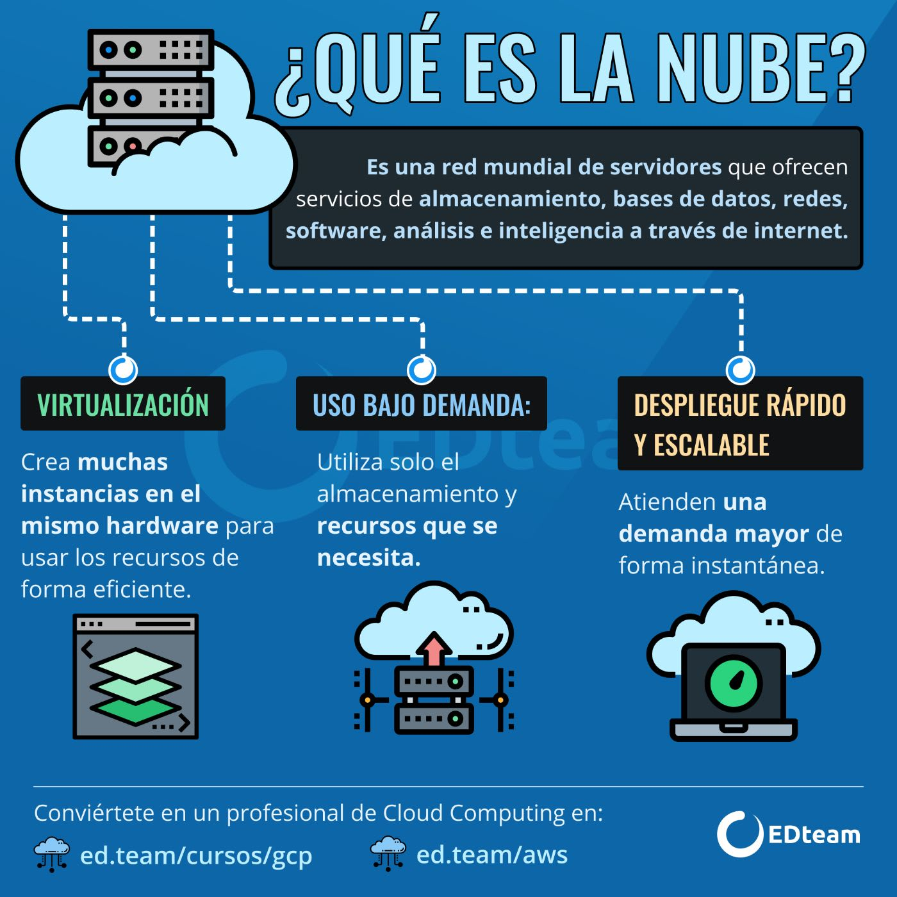
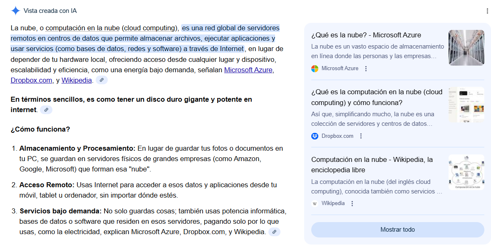
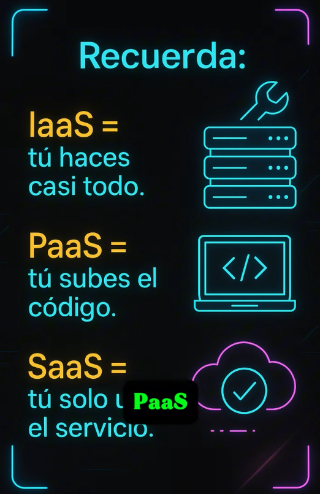
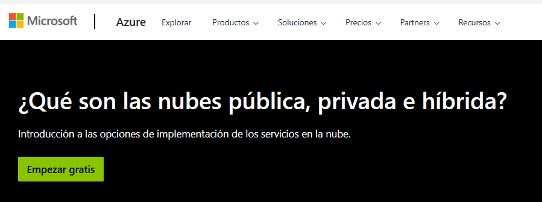
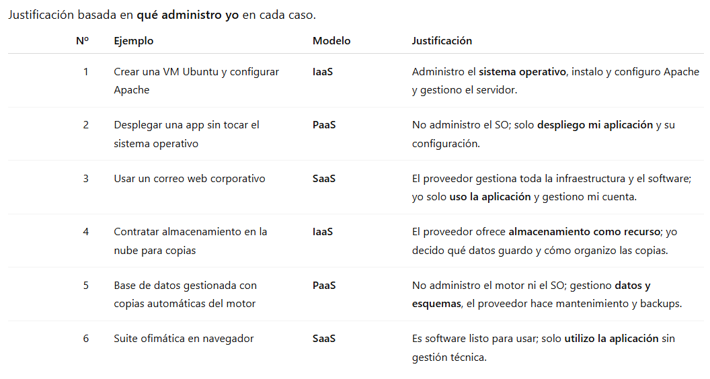

Sesión 1 - ¿Qué es la Nube?. Niveles

1️⃣-Teoría
1. Introducción: ¿qué es la nube?
La nube (cloud) es un modelo de prestación de servicios informáticos en el que accedemos por red a recursos como servidores, almacenamiento, redes y aplicaciones sin necesidad de tenerlos físicamente en el aula, en casa o en el centro.
- En lugar de “comprar y mantener” hardware, la nube permite usar recursos bajo demanda , ampliarlos o reducirlos según necesidad y, en muchos casos, pagar según consumo .
Cuando trabajamos en cloud, gran parte de la información (archivos, cuentas, copias, bases de datos) viaja y/o se almacena fuera del equipo local , lo que hace imprescindible hablar de seguridad . La seguridad de datos sirve para garantizar principalmente:
- Confidencialidad : que solo acceda quien debe (usuarios y permisos).
- Integridad : que los datos no se alteren sin control (control de cambios, registros, validaciones).
- Disponibilidad : que los datos estén accesibles cuando se necesitan (copias, redundancia, planes ante fallos).
En la práctica, la seguridad en cloud combina medidas como autenticación robusta (MFA) , control de acceso , cifrado (en tránsito y en reposo), copias de seguridad , registro/auditoría , y buenas prácticas de uso (no compartir contraseñas, evitar enlaces sospechosos, clasificación de información, etc.). Además, suele existir un modelo de responsabilidad compartida : el proveedor asegura unas capas (infraestructura), y el cliente configura correctamente otras (usuarios, permisos, datos, configuración del servicio).

💻 Actividad 1:
Crea en tu portfolio la estructura de este apartado y añade alguna imagen buscando en internet ¿Qué es la nube?
2 Concepto
Cloud como provisión de recursos por red
Cloud computing es un modelo en el que un usuario u organización accede por red a recursos informáticos configurables (servidores, almacenamiento, red, aplicaciones) que se pueden aprovisionar y liberar rápidamente con poca gestión directa del hardware .
Características clave explicadas con ejemplos cercanos
- Autoservicio bajo demanda : “creo una VM cuando la necesito”.
- Acceso por red : desde el aula, casa, móvil.
- Recursos compartidos : muchos clientes usan una infraestructura común.
- Elasticidad : se puede escalar (más CPU/RAM/instancias) o reducir.
- Servicio medido : se registra/limita el consumo y, a menudo, se factura por uso.
Ejemplo montar un servidor de prácticas durante una unidad didáctica y eliminarlo al finalizar, sin comprar equipos.
3 Niveles
(modelo por servicios): IaaS, PaaS, SaaS
La clave didáctica es esta pregunta: ¿quién administra qué? A medida que pasas de IaaS → PaaS → SaaS, el proveedor gestiona más cosas y tú gestionas menos infraestructura.

3.1 IaaS
(Infrastructure as a Service)
Qué ofrece: infraestructura virtual: máquinas virtuales , redes, almacenamiento. Qué administras tú: normalmente el sistema operativo , parches, servicios (Apache, MySQL…), usuarios del sistema, configuraciones.
Ejemplos prácticos:
- “Crear una VM Ubuntu y configurarle Apache y firewall”.
- “Montar un Windows Server para practicar roles (según el módulo).”
Cuándo conviene: cuando necesitas control del SO y de la configuración (muy típico en SMR).
3.2 PaaS
(Platform as a Service)
Qué ofrece: plataforma para desplegar aplicaciones sin gestionar tanto la infraestructura (runtime, escalado, servicios gestionados). Qué administras tú: tu aplicación , su configuración y datos (dependiendo del servicio).
Ejemplos prácticos:
- “Subo mi aplicación web y el proveedor gestiona el entorno donde corre”.
- “Uso una base de datos gestionada donde yo creo tablas/usuarios, pero el proveedor se encarga del motor, parches y alta disponibilidad (según servicio).”
Cuándo conviene: cuando quieres centrarte en el servicio y no en administrar el SO.
3.3 SaaS
(Software as a Service)
Qué ofrece: software listo para usar por navegador/app. Qué administras tú: usuarios, permisos y configuración funcional; no administras servidores.
Ejemplos prácticos:
- Correo web corporativo, ofimática online, almacenamiento tipo “drive”.
- CRM/ERP en versión online.
Cuándo conviene: cuando la prioridad es usar la herramienta con rapidez y disponibilidad.
3.4 Tabla
Responsabilidades:
| Capa | On-premise (todo tuyo) | IaaS | PaaS | SaaS |
|---|---|---|---|---|
| Aplicación | Tú | Tú | Tú | Proveedor |
| Datos / configuración | Tú | Tú | Tú | Tú (funcional) |
| Runtime / middleware | Tú | Tú | Proveedor | Proveedor |
| Sistema operativo | Tú | Tú | Proveedor | Proveedor |
| Virtualización | Tú | Proveedor | Proveedor | Proveedor |
| Hardware / CPD | Tú | Proveedor | Proveedor | Proveedor |
A continuación tienes una tabla comparativa con 10 ejemplos claros para cada modelo de servicio siguiendo exactamente las ideas clave:
- IaaS : “me dan la máquina (virtual), yo la administro”.
- PaaS : “me dan la plataforma, yo despliego”.
- SaaS : “me dan el programa, yo lo uso”.
3.5 Ejemplos
Servicios cloud por modelo
| Modelo | Servicio | Ejemplo concreto | Justificación breve |
|---|---|---|---|
| IaaS | Amazon EC2 | Máquina virtual en AWS | El usuario instala y administra el SO y los servicios |
| IaaS | Azure Virtual Machines | VM Windows/Linux en Azure | Control total del sistema operativo |
| IaaS | Google Compute Engine | VM en Google Cloud | El proveedor solo da la infraestructura |
| IaaS | OVHcloud Public Cloud | VPS/VM en OVH | Administración completa del servidor |
| IaaS | DigitalOcean Droplets | Servidor virtual sencillo | Ideal para prácticas de sistemas |
| IaaS | Hetzner Cloud | VM de bajo coste | El alumno gestiona firewall y servicios |
| IaaS | Oracle Cloud Infrastructure | VM en OCI | Gestión directa del SO |
| IaaS | IBM Cloud Virtual Servers | Servidor virtual IBM | Control de red y sistema |
| IaaS | Scaleway Instances | Instancias cloud | El usuario decide configuración |
| IaaS | OpenStack | Cloud privada educativa | Infraestructura como servicio local |
| PaaS | Google App Engine | Despliegue de apps web | No se administra el SO | | PaaS | Azure App Service | Apps web en Azure | El proveedor gestiona la plataforma | | PaaS | AWS Elastic Beanstalk | Apps Java/PHP/Python | El alumno sube código | | PaaS | Heroku | Despliegue rápido de apps | Ideal para aprender despliegue | | PaaS | Firebase | Backend gestionado | No se gestionan servidores | | PaaS | Vercel | Apps frontend | Infraestructura transparente | | PaaS | Netlify | Webs estáticas y dinámicas | Solo se gestiona el proyecto | | PaaS | Railway | Apps + BD gestionadas | Entorno ya preparado | | PaaS | Render | Servicios web y APIs | Escalado automático | | PaaS | Fly.io | Apps distribuidas | Plataforma gestionada |
| SaaS | Microsoft 365 | Correo y ofimática online | El usuario solo usa la app | | SaaS | Google Workspace | Documentos y correo | No hay gestión técnica | | SaaS | Gmail | Correo web | Software listo | | SaaS | Dropbox | Almacenamiento de archivos | Uso directo por usuario | | SaaS | OneDrive | Archivos en la nube | El proveedor gestiona todo | | SaaS | Salesforce | CRM online | Aplicación completa | | SaaS | Trello | Gestión de tareas | Uso vía navegador | | SaaS | Slack | Comunicación de equipos | No hay servidores propios | | SaaS | Zoom | Videollamadas | Servicio listo | | SaaS | MoodleCloud | Plataforma educativa | El centro solo la usa |
💻 Actividad 2:
Define brevemente cada tipo de plataforma, accede a algún servicio de los mencionados anteriormente y llévalo a tu Portfolio mediante captura
4. Tipología
Según despliegue: pública, privada, híbrida
Nube pública
Infraestructura del proveedor, compartida entre múltiples clientes. Acceso por Internet. Ejemplo: servicios cloud comerciales típicos.
Nube privada
Entorno cloud dedicado a una organización (en su CPD o alojado), con mayor control y políticas internas. Ejemplo: cloud privada de una empresa grande o administración.
Nube híbrida
Combinación integrada de pública + privada (y/o sistemas locales). Ejemplo: la empresa mantiene servicios sensibles en privada y usa pública para picos de carga o copias.
Mini regla: Pública = “de proveedor”, Privada = “de mi organización”, Híbrida = “mezcla conectada”.
💻 Actividad 3:
Busca el siguiente artículo y añade alguna definición (coppia/pega) acerca de los 3 tipos de cloud

💻 Actividad 4:
Ejemplo para clasificar: piensa de qué tipo serían los siguientes ejemplos:
Clasifica como IaaS / PaaS / SaaS y justifica con “qué administro yo”:
- “Crear una VM Ubuntu y configurar Apache”
- “Desplegar una app sin tocar el sistema operativo”
- “Usar un correo web corporativo”
- “Contratar almacenamiento en la nube para copias”
- “Base de datos gestionada con copias automáticas del motor”
- “Suite ofimática en navegador”

💻 Moodle & Portfolio
- Sube el enlace actualizado tu portfolio a Moodle y, si has generado algún archivo PDF o similar, súbelo también.